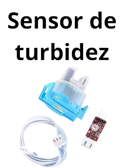

CONFIGURAÇÃO
O protótipo é composto por:
-
SISTEMA DE FILTRAÇÃO:
por carvão ativado e manta perlon, capaz de remover impurezas, odor, sabor e cor da água da chuva, tornando-a limpa e segura para o consumo humano; -
SISTEMA DE DESINFECÇÃO:
utilizando tecnologia de luz ultravioleta (UV) para inativar microorganismos patogênicos, garantindo a potabilidade da água; -
SISTEMA DE MONITORAMENTO:
monitorando a qualidade da água em tempo real, através de sensores de turbidez e ph.
PRINCIPAIS COMPONENTES
Microcontrolador utilizado no desenvolvimento do projeto. Responsável por controlar toda lógica do circuito elétrico.
Mede a resistência da água à passagem de luz. A turbidez é a medida da dificuldade de um feixe de luz atravessar uma certa quantidade de água, conferindo uma aparência turva à mesma.
O ph corresponde ao potencial hidrogeniônico de uma solução. Ele é determinado pela concentração de íons de hidrogênio (H+) e serve para medir o grau de acidez, neutralidade ou alcalinidade de determinada solução.
Transporte de água de um reservatório para outro.
Utilizadas para controlar o fluxo de água.
Comumente usados para ligar ou desligar dispositivos.
Expõe os parâmetros aquáticos (Turbidez e PH) para o usuário.
ESQUEMA ELÉTRICO
do protótipo